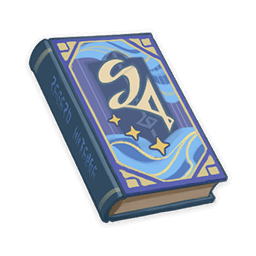
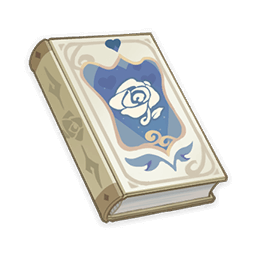
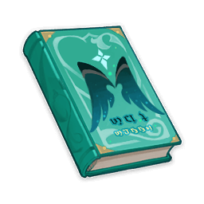

About The Owner

Who is Yae Miko?
Yae Miko is the head shrine maiden of the Grand Narukumi Shrine in Inazuma and she is part of the Kitsune Lineage. She is first shown when an old man named Domon who is needing exorcism and she says that Domon has not been possessed by anything but he is suffering with a spiritual collapse unable to cope with pressure when he lost his vision and meets with the traveler whom she grew fond of and has high hopes for them. Yae Miko bears a strong resemblance to Yae Sakura who has long pink hair and purple eyes. She has her hair tied loose into a low tail with a golden accessory on the back and low pink fox ears with earrings which contains the Electro Vision. She wears a shrine maiden dress with floral prints and sandals.

Books Published
Ms. Miko is known as head edidtor in the Yae Publishing House. She has had her hands on every book seen in production in the entire store, but as for her own novels and books, she has written theese best sellers.
  
| Title | Sold Copies | Book Preview |
|---|---|---|
| New Chronicles of the Six Kitsune | 5,233 | "Prologue Stories relating to memory always seem to have to do with those moments where you gain something and lose it straight away. If you're wondering how I came to write about it, it's hardly the most exciting story." |
| A Ledgend of Sword | 6,789 | "Amid a sea of stars that spin in reverse, light-centuries of war unfold down on the planet's surface... With this grandiose opening comes an all-new tale of gallantry!" |
| The Pale Princess and the Six Pygmies | 5,003 | "A fairytale story that has been told throughout Teyvat for ages. This is part one, which tells the story of the Land of Night and the Moonlight Forest." |
| A Thousand Nights | 7,920 | "A wandering researcher once walked through rainforest, desert, and city during a time of great catastrophe, collecting these stories along the way. It is said that the original work truly did contain countless tales and that naught but a fragment of that is still extant today." |
| Toki Alley Tales | 4,556 | "They say that in the past, when the fragile and short-lived mortals had yet to cross over the sea unto these lands, Inazuma was once a land that belonged to the tanuki. They say, too, that human history began as drunken tanuki nonsense... Welcome to Toki Alley, a place where history and wild tales intertwine." |
Feedback

Yae Miko is always looking for feedbacl on her work. If you have read and reviewd any of the novels listed below, or any novel with Ms. Miko's name on the cover, she is interested in your feedback.